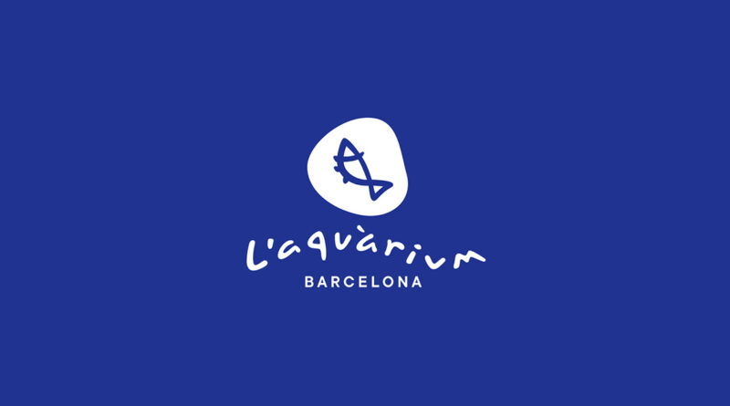
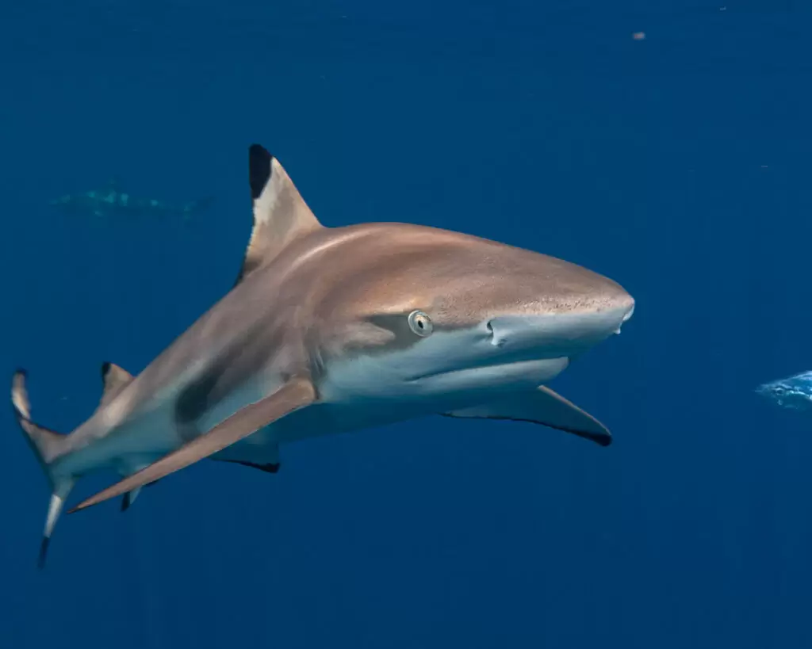
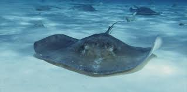
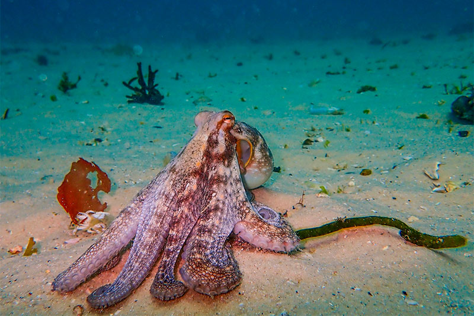
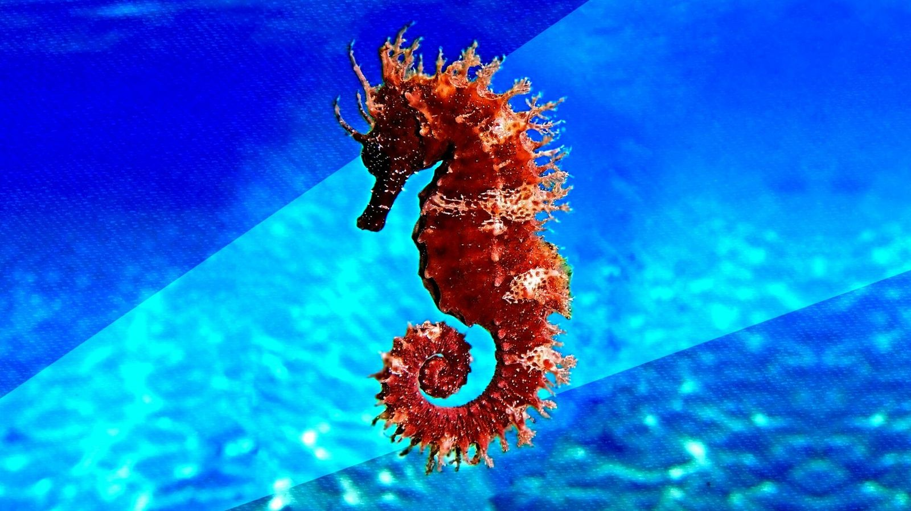

Estas son algunas de las especies del acuario:

El tiburón toro (Carcharias taurus) es uno de los grandes protagonistas del Oceanarium. Pueden alcanzar los 3,2 metros de longitud.

La raya común (Raja clavata) es representativa del Mediterráneo. Su cuerpo aplanado le permite camuflarse sobre el fondo arenoso.

El pulpo común (Octopus vulgaris) es uno de los invertebrados más inteligentes del planeta, capaz de cambiar de color y textura.

El caballito de mar (Hippocampus guttulatus) es una especie carismática. El acuario participa en un programa de cría en cautividad.